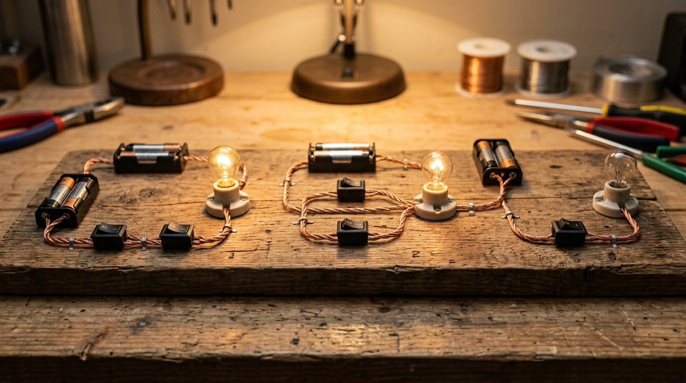
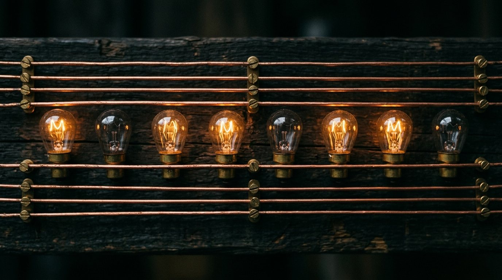
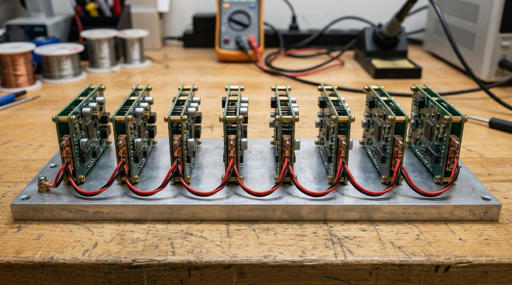
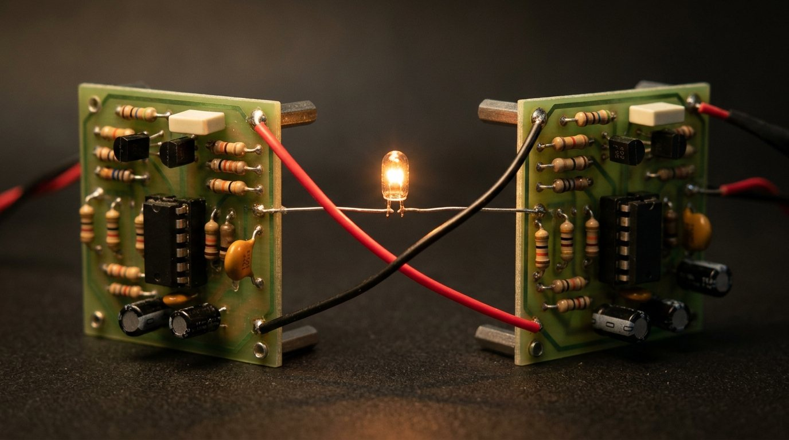
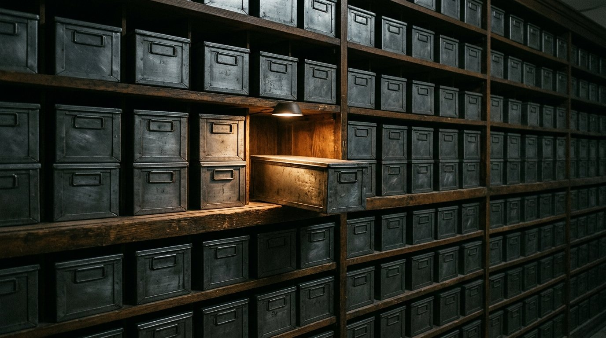
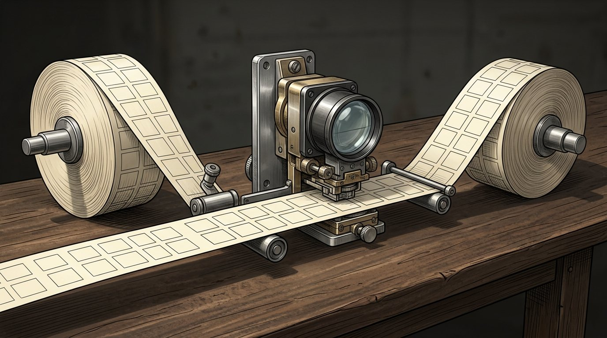

A planta
Do interruptor até uma máquina que faz conta e obedece ordem, sem ligar nada. De 1936 a 1948, tudo no papel. Quando o áudio pedir, aperte Próximo.
Isto é a planta, não o canteiro. Enquanto estas ideias eram escritas, já tinha gente montando máquina de verdade em Berlim, em Harvard e na Pensilvânia. O canteiro é o próximo episódio.
As três portas

Tudo o que vem daqui pra frente, não importa o tamanho da máquina, é combinação dessas três.
Um fio é um bit

Casa a casa, dobrando em vez de multiplicar por dez: 1, 2, 4, 8, 16, 32, 64. O valor cresce rápido, e por isso poucos fios já dão conta de número grande.
O meio somador
Somar dois bits dá quatro casos, e duas portas resolvem: um OU exclusivo dá o resultado da casa, um E dá o vai-um. Só falta uma coisa: ele não sabe receber o vai-um de quem veio antes.
Oito na fileira

Com uma entrada a mais pro vai-um que chega de trás, o meio somador vira somador completo. Emenda oito e soma oito bits; emenda mais e soma o que quiser.
Tudo é soma arrumada
Nenhuma dessas contas pede peça nova. Pedem mais somas e um jeito de escrever número negativo.
O flip-flop

Todos os circuitos até aqui entregam o resultado e esquecem. Este segura um bit enquanto tiver energia. É a primeira peça que não calcula: lembra.
A prateleira de caixas numeradas

Uma fileira de flip-flops é uma palavra. Número, letra e ordem, tudo vira 0 e 1 guardado ali dentro, e a máquina não sabe qual é qual: quem sabe é quem lê.
A máquina de fita

Em 1936, no papel, Alan Turing mostrou que uma máquina bem simples faz qualquer conta que uma pessoa faça com lápis e papel, desde que a conta tenha passo a passo.
Uma máquina que imita todas
UMA máquina dessas pode imitar qualquer outra, se receber a tabela da outra como dado na fita. É a ideia que separa uma coisa da outra, e ela vale até hoje.
A lista de ordens
Um acumulador, onde o resultado mora. Um contador, que diz qual é a próxima ordem. E um punhado de ordens com código. Pular pra outro endereço é mover o dedo, e é isso que faz o laço e a decisão.
A fronteira
Interruptor vira porta, porta vira somador, somador e memória viram uma máquina que lê ordem, e a ordem é só mais um dado na memória. A planta está pronta: estamos em 1948.